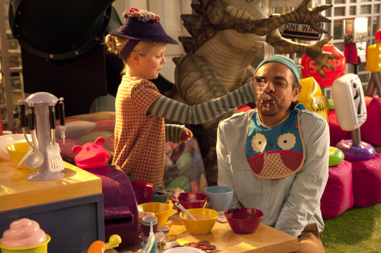
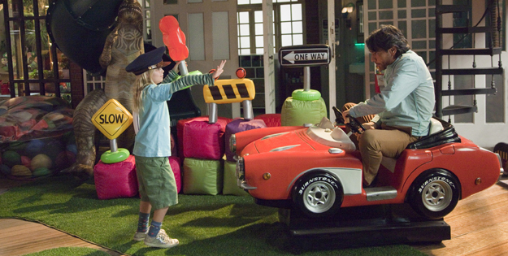

NO SE ACEPTAN DEVOLUCIONES
 No se aceptan devoluciones (en inglés: Instructions Not Included) es una película mexicana de comedia dramática protagonizada, coescrita y dirigida por el actor y comediante mexicano Eugenio Derbez.
Con un bajo presupuesto de $5 millones de dólares, la película ha logrado recaudar $99,067,206 dólares ($1,273,881,370 pesos mexicanos) convirtiéndose en la primera película mexicana en llegar a los mil millones de pesos mexicanos a nivel mundial, catalogándose como la película mexicana más taquillera de la historia por arriba de Nosotros los nobles (producción mexicana realizada por el director mexicano Gary Alazraki).
No se aceptan devoluciones (en inglés: Instructions Not Included) es una película mexicana de comedia dramática protagonizada, coescrita y dirigida por el actor y comediante mexicano Eugenio Derbez.
Con un bajo presupuesto de $5 millones de dólares, la película ha logrado recaudar $99,067,206 dólares ($1,273,881,370 pesos mexicanos) convirtiéndose en la primera película mexicana en llegar a los mil millones de pesos mexicanos a nivel mundial, catalogándose como la película mexicana más taquillera de la historia por arriba de Nosotros los nobles (producción mexicana realizada por el director mexicano Gary Alazraki).
Argumento
Valentín Bravo es un hombre al que desde niño se le ha impuesto vivir la vida al límite por su padre, un fanático de las emociones extremas y clavadista de acantilados de Acapulco llamado Juan "Johnny" Bravo. Él nunca entendió por qué le intentaba hacer encarar sus peores miedos, los cuales constantemente ve aparecer personificados como lobos cuando alguna situación requiere ser enfrentada y no desea hacerlo; finalmente las exigencias de su padre acaban abrumándolo y generando un quiebre donde Valentín se aleja y rechaza todo lo que éste le enseñó. Veinticinco años más tarde no ha superado sus miedos grandes ni pequeños, siendo especialmente temeroso de los compromisos sentimentales y las responsabilidades de un adulto.
Valentín es un mujeriego que constantemente lleva mujeres diferentes a su apartamento de soltero en Acapulco, una de ellas es una turista norteamericana llamada Julie Weston a quien como lo ha hecho con muchas otras le jura amor eterno para lograr que acepte acostarse con él. Veinte meses después, Julie llega con una sorpresa que no esperaba: es padre y, fingiendo que va a pagar el taxi, le encarga la bebé y abandona a su hija con Valentín.
Decidido a devolver a su hija Maggie, la bebé, a su madre en Los Ángeles. Gracias a una foto descubre que ella trabajaba como profesora de aeróbica en un hotel, por lo que cruza ilegalmente la frontera y llega al lugar. Allí los trabajadores le explican que ella fue despedida al descubrirse que llevaba gente a la suite para tener sexo. Sin embargo, como Valentín no comprende el inglés, erróneamente piensa que le dicen que ella está en ese cuarto por lo que deja a Maggie cerca de la piscina del hotel y sube a buscarla. Así conoce a Frank, un director de cine que busca un doble de riesgo para sus películas. Cuando Maggie cae a la piscina, Valentín, a pesar del miedo, se arroja desde el balcón del último piso para rescatarla. Al ver esto, Frank le ofrece el trabajo para poder mantener a Maggie, ya que no puede regresar a México con ella. Valentín, quien ha comprendido al ver a la bebé en peligro, que la quiere y desea cuidarla, acepta este trabajo.
Siete años más tarde, Valentín es un reputado doble que gana hasta USD10.000 por día, gracias a lo cual cuida a su hija con lujos; esto a pesar de que aun es un cobarde que se aterra ante el peligro, pero esto pasa siempre a segundo plano ante el miedo a decepcionar a su hija, quien lo ve como un hombre valiente e imparable. Un día, en lo que hace creer a Maggie que es un chequeo de rutina en la clínica, el doctor lo examina e inyecta y tras hacer salir a la niña le explica que algún tratamiento que estaban llevando a cabo no funcionó y que le queda poco tiempo de vida. Valentín, asustado, decide aprovechar el tiempo junto a su hija Maggie.
La versión que Maggie conoce sobre sus padres es que anteriormente estuvieron casados pero se divorciaron y Julie se ha dedicado a viajar por el mundo viviendo aventuras, conociendo personalidades y llevando a cabo misiones para proteger la paz; para mantener la ilusión de la niña cada semana Valentín le escribe una carta fingiendo ser Julie donde le cuenta lo que ha hecho y dice cuanto la ama junto a fotomontajes realizados sobre la única fotografía que poseen de ella, donde la muestran en grandes aventuras. Sin embargo, esto afecta su relación con otros niños, quienes se burlan de ella por las historias inverosímiles que cuenta sobre su madre y por decir que es nieta de Johnny Bravo. Ante esto Valentín con ayuda de Frank, quien con los años se ha convertido en su mejor amigo, decide contratar una actriz para que se haga pasar por Julie, sin embargo, la madre de Maggie aparece repentinamente y se encuentra con la niña.
 Julie decide quedarse algunos días en Los Ángeles junto a Maggie, naciendo rápidamente un gran cariño por su hija. Valentín también siente algunos sentimientos despertar en su interior hacia Julie, pero todo esto se echa por tierra cuando ella revela que desea presentarles a su pareja, quien resulta ser una mujer llamada Renée. De todas formas y sabiendo la imagen que Valentín ha construido sobre su madre para Maggie, Julie no duda en decirle a la niña que todo son mentiras inventadas por su padre, aunque Valentín logra evitar que le revele que la había abandonado, de todas formas, esto produce una fractura en su relación con Maggie, quien ve a su padre ahora como un mentiroso. A los pocos días Julie se despide ya que deben regresar a Nueva York, prometiendo regresar en pocos días y visitarla de forma regular; sin embargo poco después Valentín recibe una notificación donde lo ha demandado para obtener la custodia total de Maggie.
A pesar de que tras ver la relación de Valentín con Maggie, Julie tiene claro que es un padre amoroso y protector no tiene reparos en señalar como falencias la incapacidad de él para hablar inglés y el hecho que trabaje como doble, haciendo hincapié en que comparado con esto, el hecho que ella la abandonara es insignificante, al mismo tiempo, Renée y su abogado enaltecen su imagen mostrándola como una mujer valerosa que superó sus adicciones y la mala vida para estudiar y convertirse en abogada. Valentín, decidido a no perder a su hija, renuncia a su carrera y busca un trabajo más seguro; Frank, única persona que conoce el secreto, insiste en que si revela el diagnóstico del médico el juez no se atreverá a separarlos, pero el padre es inflexible respecto a jamás revelarlo. El día del juicio a pesar de que muchos amigos testifican a su favor, se expresan, sin intención, de forma que lo hace parecer inepto o negligente el juez, tras oír a Valentín declarar, dictamina que la custodia de Maggie le pertenece ya que ha demostrado no solo que es capaz de saltar de un edificio por su bien, sino también a renunciar a seguir haciéndolo, por lo cual Julie pierde la custodia de la niña.
Ante esto la madre de la niña revela que Valentín no es realmente el padre biológico, simplemente es alguien a quien decidió engañar para deshacerse de ella y con una prueba de paternidad obtiene la custodia. Valentín y Maggie deciden escapar a Acapulco, donde él le promete que por fin podrá conocer a su abuelo de quien ha oído tantas historias y con quien él desea reconciliarse; pero una vez allí se enteran que Johnny falleció hace tiempo, haciendo que su hijo reconozca que desde que Maggie llegó a su vida comprendió los motivos tras la forma de actuar de su padre y lo mucho que lamenta jamás haber podido hacer las paces con él.
 Julie intenta obtener información acerca del paradero de su hija amenazando a Frank y éste termina revelando la verdad sobre el diagnóstico. Julie llega a Acapulco y se reúne con Valentín y Maggie demostrando que tras enterarse de la verdad no tienen intenciones de continuar el litigio; los tres viven felizmente como una familia por las siguientes dos semanas, mientras se oye la voz de Valentín explicar como es que el diagnóstico del doctor se refería realmente a Maggie, quien tenía una deformación coronaria degenerativa que en el mejor de los casos la sumiría en un coma permanente y en el peor y más probable la mataría en algún momento mientras durmiera. Una tarde estando sentados a la orilla del mar, se confirma el diagnóstico y Maggie muere pacíficamente en brazos de Valentín mientras observaban el atardecer.
Un año después, Valentín aun vive en Acapulco y habla acerca del cambio de vida que tuvo gracias a Maggie, las enseñanzas de su difunto padre y como ha aprendido a enfrentar sus miedos, finalmente menciona que en su mente se imagina que Maggie está en el cielo, jugando con su abuelo quien continúa enseñándole a ser valiente.